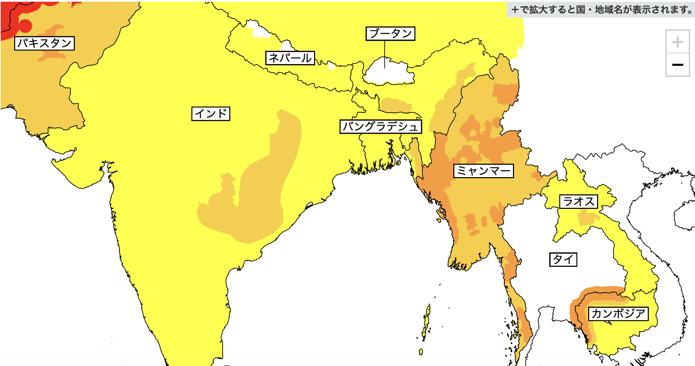

🦠
ニパウイルス（NiV）最新状況レポート
2026年1月31日時点
1. 直近の発生状況（インド・西ベンガル州）
2026年1月中旬、インド東部の西ベンガル州で発生した症例について、当局は「迅速な封じ込めに成功した」と評価しています。
-
●
確定症例: 西ベンガル州の看護師2名（1月27日に公式発表）。
-
●
接触者調査: 濃厚接触者を含む196名を追跡し、RT-PCR検査を実施。1月27日時点で全員の陰性を確認済み。
-
●
現状: 二次感染の拡大は見られず、コミュニティ内での持続的なヒトからヒトへの感染リスクは極めて低い状況です。
2. 主要国・機関の見解と対応
| 機関・国 | ステータス | 主な対応・見解 |
|---|---|---|
| WHO | リスク「低」 | 国際的な拡大リスクは低い。渡航・貿易制限は「不要」と勧告。 |
| 日本政府 | 注意喚起 | 外務省スポット情報を発出。渡航警戒レベルの引き上げはなし。 |
| インド政府 | 封じ込め済 | 西ベンガル州での監視継続。院内感染防止プロトコルの再徹底。 |
| ベトナム政府 | 監視強化 | タンソンニャット空港等での検温、インド渡航者への健康申告義務化。 |
日本外務省 海外安全情報 — 渡航危険度マップ

出典: 外務省 海外安全ホームページ
3. ニパウイルス感染者数テーブル（主要発生年）
| 西暦 | マレーシア | シンガポール | バングラデシュ | インド | フィリピン |
|---|---|---|---|---|---|
| 1998-99 | 265 | 11 | - | - | - |
| 2001 | - | - | 13 | 66 | - |
| 2014 | - | - | 18 | - | 17 |
| 2018 | - | - | - | 19 | - |
| 2023 | - | - | 14 | 6 | - |
| 2024 | - | - | - | 6 | - |
| 2025 | - | - | - | - | - |
| 2026 (Jan) | - | - | - | 2 | - |
4. NiV 予防ガイドライン：エビデンスに基づく対策
ニパウイルスは非常に致死率が高く（40-75%）、現時点で有効なワクチンや治療薬が承認されていないため、「物理的な遮断」と「衛生管理」が唯一の防御手段です。
4-1. 物理的な防護策（マスク・手洗い・うがい）の効果
| 対策項目 | 効果の強さ | 根拠と詳細 |
|---|---|---|
| 手洗い（石鹸） | 特大 | ニパウイルスは「エンベロープ（脂質の膜）」を持つウイルスです。石鹸やアルコールは膜を破壊するため、非常に高い不活化効果があります。 |
| マスク (N95/サージカル) | 大 | ヒトからヒトへの感染は主に飛沫（Droplet）を介します。医療現場や密閉された空間での飛沫吸入を防ぐために強く推奨されます。 |
| うがい | 中〜小 | 呼吸器感染症全般（インフルエンザ等）の予防効果は論文で示されていますが、ニパウイルスに特化した高い予防エビデンスは限定的です。補助的手段と考えましょう。 |
💡 論文・統計的背景
-
●
IPC（感染予防管理）の実践: 2025-2026年の研究レビュー（Pritchard & Hornsey等）では、医療従事者のPPE（個人用防護具）着用が院内感染を劇的に抑えることが再確認されています。
-
●
石鹸の効果: ニパウイルスのようなヘニパウイルス属は、環境中では比較的弱く、一般的な消毒剤（70%アルコール、次亜塩素酸ナトリウム、石鹸）で容易に死滅します。
4-2. 最も重要な「経路別」予防策
ニパウイルスに特有の感染経路を防ぐことが、一般的な風邪対策よりも重要です。
① 飲食物の汚染を防ぐ（最優先）
-
●
生樹液を飲まない: バングラデシュ等の流行地では、オオコウモリの唾液や尿で汚染された「生のナツメヤシ樹液」が最大の感染源です。
-
●
果物の選別: コウモリがかじった跡のある果物や、地面に落ちている果物は絶対に食べないでください。
-
●
果物の洗浄と皮剥き: 食べる前には必ず流水でよく洗い、可能であれば皮を剥いて摂取してください。
② 動物との接触を避ける
-
●
自然宿主: オオコウモリ（フルーツバット）の生息地に近づかないこと。
-
●
中間宿主: 過去にマレーシアで流行した際は「豚」が媒介しました。流行地域では家畜（豚、馬、犬など）との不要な接触を避けてください。
③ ヒトからヒトへの感染を防ぐ
-
●
濃厚接触の回避: 感染者の体液（血液、尿、唾液）には強い感染力があります。
-
●
死者との接触: 葬儀等で遺体に触れる行為もリスクが高いため、流行地では伝統的な儀式においても注意が必要です。
4-3. 実務的アドバイス（PM・ビジネス渡航者向け）
ホーチミン拠点のPMとして、チームや自身を守るための具体的なアクションは以下の通りです。
-
1
「手洗い・消毒」をデフォルトにする: オフィス入り口や共有スペースにアルコール消毒液を設置。これはデング熱や他の感染症対策としても有効です。
-
2
流行情報の監視: WHOや現地の保健省（ベトナムならMoH）の発表を週1回程度チェックする。
-
3
体調不良者の早期隔離: 高熱、激しい頭痛、呼吸器症状があるメンバーには、迷わず医療機関の受診とリモートワークを指示してください。